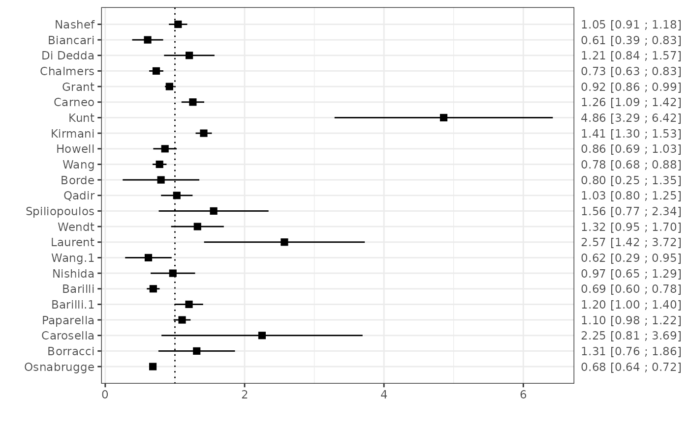
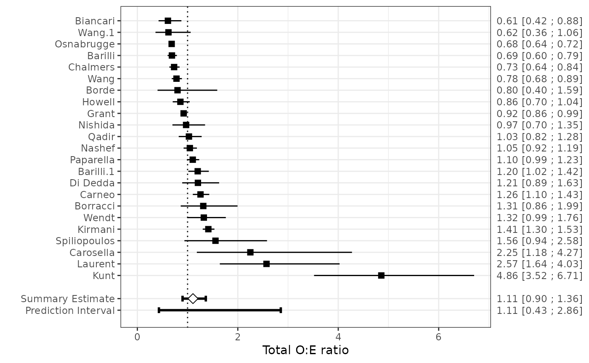

Case Study
The EuroSCORE II is a commonly used scoring rule for estimating the risk of in-hospital mortality in patients undergoing major cardiac surgery. It was developed using data from 16,828 adult patients from 43 countries. Predictors include patient characteristics (e.g. age, gender), cardiac related factors (e.g. recent MI) and surgery related factors (e.g. Surgery on thoracic aorta). In 2014, a systematic review was undertaken by Guida et al. (2014) to search articles assessing the performance of EuroSCORE II on perioperative mortality in cardiac surgery. The systematic review identified 24 eligible validation studies, 22 studies were included in the main analysis.
In this case study, we summarize the results from these 22 studies, as well as the results from the split-sample validation contained within original development article of EuroSCORE II. We will use the metamisc package to derive summary estimates for the discrimination and calibration performance of EuroSCORE II, to evaluate the presence of between-study heterogeneity, and to identify potential sources of between-study heterogeneity. A step-by-step tutorial is provided by Debray et al. (2017).
We can load the data from all 23 validation studies as follows:
| Study | Patients (n) | Mortality (%) | euroSCORE II (%) | c-index |
|---|---|---|---|---|
| Nashef | 5553 | 4.18 | 3.95 | 0.8095 |
| Biancari | 1027 | 2.73 | 4.50 | 0.8670 |
| Di Dedda | 1090 | 3.76 | 3.10 | 0.8100 |
| Chalmers | 5576 | 3.43 | 4.68 | 0.7900 |
| Grant | 23740 | 3.14 | 3.41 | 0.8080 |
| Carneo | 3798 | 5.66 | 4.46 | 0.8500 |
| Kunt | 428 | 7.94 | 1.70 | 0.7200 |
| Kirmani | 15497 | 3.53 | 2.53 | 0.8180 |
| Howell | 933 | 9.65 | 11.30 | 0.6700 |
| Wang | 11170 | 2.02 | 2.55 | 0.7200 |
| Borde | 498 | 1.61 | 2.01 | 0.7200 |
| Qadir | 2004 | 3.79 | 3.72 | 0.8400 |
| Spiliopoulos | 216 | 6.48 | 3.99 | 0.7700 |
| Wendt | 1066 | 4.22 | 3.20 | 0.7200 |
| Laurent | 314 | 5.73 | 2.30 | 0.7700 |
| Wang | 818 | 1.59 | 1.60 | 0.6420 |
| Nishida | 461 | 7.16 | 7.40 | 0.7697 |
| Barilli | 12201 | 1.72 | 2.50 | 0.8000 |
| Barilli | 1670 | 7.49 | 6.20 | 0.8200 |
| Paparella | 6191 | 4.85 | 4.40 | 0.8300 |
| Carosella | 250 | 3.60 | 1.64 | 0.7600 |
| Borracci | 503 | 4.17 | 3.18 | 0.8560 |
| Osnabrugge | 50588 | 2.12 | 3.10 | 0.7700 |
Meta-analysis of calibration performance
Calibration refers to a model’s accuracy of predicted risk probabilities, and indicates the extent to which expected outcomes (predicted from the model) and observed outcomes agree. Summarizing estimates of calibration performance is challenging because calibration plots are most often not presented, and because studies tend to report different types of summary statistics in calibration. For example, in the case study, calibration was assessed using the Hosmer-Lemeshow test, calibration plots or by comparing the observed mortality to the predicted EuroSCORE II (either overall or for groups of patients). Within each validation study, we can compare the total number of observed events (O) with the total number of expected (predicted) events by deriving their ratio O:E. The total O:E ratio provides a rough indication of the overall model calibration (across the entire range of predicted risks). It describes whether more (O:E > 1) or fewer (O:E < 1) events occurred than expected based on the model. Whilst the O:E ratio itself was not explicitly reported in all studies, it can be calculated from other reported information:
The O:E ratio can also be derived from the observed and predicted
mortality risk Po and, respectively, Pe:
It is recommended to first transform extracted O:E ratios to the log (natural logarithm) scale before applying a meta-analysis (Snell et al. 2017).
Meta-analysis requires a standard error for each extracted estimate of model performance. If standard errors cannot be retrieved from original articles, they should be calculated using reported information. For example, the standard error of the log O:E ratio, which is approximately given as
\[\sqrt{(1/O) - (1/N)} \approx \sqrt{1/O}\]
We can implement this as follows:
We can now visualise the calibration performance of EuroSCORE II across the included studies by generating a forest plot:
For each validation study, the O:E ratio is provided with its 95% confidence interval. The size of the boxes indicates the sample size of the corresponding validation study. In this forest plot, O:E ratios appear to vary substantially across the included validation studies. These results suggest that the calibration of EuroSCORE II is prone to substantial between-study heterogeneity.
In metamisc, we can combine the aforementioned steps as follows:
oe.ad <- oecalc(N = n, O = n.events, E = e.events, slab = Study,
data = EuroSCORE)
plot(oe.ad, refline = 1, sort = "no")
Note that if we want to derive the log O:E ratio instead, we should use:
logoe.ad <- oecalc(N = n, O = n.events, E = e.events,
slab = Study, g = "log(OE)", data = EuroSCORE)Fixed effect meta-analysis
We can now summarize the results from the included validation studies. A simple approach is to calculate a weighted average, where the estimate of each study is simply weighted by its precision. This approach is also known as fixed effect meta-analysis, where the weighted average \(\mu\) is given by:
\[\mu = \dfrac{ \sum_{i=1}^{K}\left( \hat \theta_i / \left(\mathrm{SE}(\hat \theta_i)\right)^2 \right)}{ \sum_{i=1}^{K}\left( 1 / \left(\mathrm{SE}(\hat \theta_i)\right)^2 \right) }\\\] In this expression, \(\hat \theta_i\) represent the study specific estimates for the log O:E ratio, and \(K\) represents the total number of included studies. Aforementioned estimate for \(\mu\) corresponds to the maximum likelihood of a fixed effect meta-analysis that assumes normality of the log O:E ratio within studies:
\[\hat \theta_i \sim \mathcal{N}\left(\mu, \left(\mathrm{SE}(\hat \theta_i)\right)^2\right)\] We can directly calculate the pooled log O:E ratio as follows:
Since the meta-analysis is performed using log-transformed estimates, the summary estimate for the total O:E ratio is given as \(\exp(\hat \mu)\):
exp(mu)## [1] 0.9383039The fixed effect meta-analysis of the total O:E ratio can also be performed using metafor:
## [,1]
## intrcpt 0.9383039Alternatively, we can directly implement all of the aforementioned
data preparation and meta-analysis steps using the
valmeta() command. Hereto, we will use information on the
total number of observed and expected events from each validation study,
as well as the total sample size. Note that unless specified otherwise,
valmeta() will apply the log transformation to summarize
estimates of the total O:E ratio, and back-transform the results to the
original scale.
valmeta(measure = "OE", O = n.events, E = e.events, N = n, method = "FE",
data = EuroSCORE)## Summary Total O:E ratio with 95% confidence interval:
##
## Estimate CIl CIu
## 0.9383039 0.9111366 0.9662812
##
## Number of studies included: 23The pooled O:E ratio is 0.94, which implies that, on average, EuroSCORE II tends to over-estimate the risk of peri-operative mortality.
The previous meta-analysis models derived a summary estimate for the
total O:E ratio from information on the total number of observed events,
the total number of expected events, and the total sample size. In
practice, however, the total sample size may not always be reported, and
in such situations approximations can be used for estimating the
standard error of the total O:E ratio. To illustrate this, we can re-run
our fixed effect meta-analysis by omitting the sample size from the
valmeta() command:
valmeta(measure = "OE", O = n.events, E = e.events, method = "FE",
data = EuroSCORE)## Summary Total O:E ratio with 95% confidence interval:
##
## Estimate CIl CIu
## 0.9353144 0.9077502 0.9637156
##
## Number of studies included: 23Results are nearly identical to the analyses where we utilized information on the sample size of the validation studies.
Random effects meta-analysis
The discrimination and calibration of a prediction model are highly likely to vary between validation studies due to differences between the studied populations (Richard D. Riley et al. 2016). A major reason is different case mix variation, which generally occurs when studies differ in the distribution of predictor values, other relevant participant or setting characteristics (such as treatment received), and the outcome prevalence (diagnosis) or incidence (prognosis). Case mix variation across different settings or populations can lead to genuine differences in the performance of a prediction model, even when the true (underlying) predictor effects are consistent (that is, when the effect of a particular predictor on outcome risk is the same regardless of the study population). For this reason, it is often more appropriate to adopt random effects meta-analysis models when summarizing estimates of prediction model performance. Briefly, this approach considers two sources of variability in study results:
- The estimated effect \(\hat \theta_i\) for any study (i) may differ from that study’s true effect (\(\theta_i\)) due to estimation error, \(\mathrm{SE}(\hat \theta_i)\).
- The true effect (\(\theta_i\)) for each study differs from \(\mu\) because of between-study variance (\(\tau^2\)).
The weighted average \(\mu\) is then given as:
\[\mu = \dfrac{ \sum_{i=1}^{K}\left( \hat \theta_i / \left(\tau^2 + \left(\mathrm{SE}(\hat \theta_i)\right)^2\right) \right)}{ \sum_{i=1}^{K}\left( 1 / \left(\tau^2 + \left(\mathrm{SE}(\hat \theta_i)\right)^2\right) \right) }\]
The heterogeneity parameter \(\tau^2\) is often estimated separately and then inserted as known value in the equations above to obtain an estimate for \(\mu\). It is, however, often more reliable to simultaneously estimate \(\mu\) and \(\tau\) and directly account for their respective estimation error. The random effects model can then more generally be described as follows, and requires iterative estimation procedures.
\[ \begin{aligned} \hat \theta_i &\sim \mathcal{N}\left(\theta_i, \left(\mathrm{SE}(\hat \theta_i)\right)^2\right) \\ \theta_i &\sim \mathcal{N}\left(\mu, \tau^2\right) \end{aligned} \]
As indicated, the random effects meta-analysis model assumes normality of the performance statistic (log O:E ratio), both at the within-study and between-study levels (Snell et al. 2017). Within each study, the estimated performance statistic is assumed to be normally distributed around some true performance for that study (\(\theta_i\)) with known standard deviation \(\mathrm{SE}(\hat \theta_i)\). Between studies, the true performance statistic from each study is also assumed to be drawn from a normal distribution with mean performance \(\mu\) and between-study variance \(\tau^2\).
The random effects model can be implemented as follows. In line with previous recommendations (Debray et al. 2017), we will adopt restricted maximum likelihood estimation and use the method by Knapp and Hartung (2003) for calculating 95% confidence intervals.
fit.REML <- valmeta(measure = "OE", O = n.events, E = e.events, N = n,
method = "REML", slab = Study, data = EuroSCORE)
fit.REML## Summary Total O:E ratio with 95% confidence and (approximate) 95% prediction interval:
##
## Estimate CIl CIu PIl PIu
## 1.1075973 0.8998973 1.3632352 0.4295250 2.8561122
##
## Number of studies included: 23More detailed information on the meta-analysis model (summarizing estimates of the log O:E ratio) can be explored as follows:
fit.REML$fit##
## Random-Effects Model (k = 23; tau^2 estimator: REML)
##
## tau^2 (estimated amount of total heterogeneity): 0.1975 (SE = 0.0665)
## tau (square root of estimated tau^2 value): 0.4444
## I^2 (total heterogeneity / total variability): 97.21%
## H^2 (total variability / sampling variability): 35.89
##
## Test for Heterogeneity:
## Q(df = 22) = 435.5487, p-val < .0001
##
## Model Results:
##
## estimate se tval df pval ci.lb ci.ub
## 0.1022 0.1001 1.0206 22 0.3186 -0.1055 0.3099
##
## ---
## Signif. codes: 0 '***' 0.001 '**' 0.01 '*' 0.05 '.' 0.1 ' ' 1Results from the random effects meta-analysis suggest that, on average, EuroSCORE II tends to slightly underestimate the risk of mortality. There was a substantial amount of between-study heterogeneity, I2 = 97% (\(\hat \tau\) = 0.44). To facilitate the interpretation of the summary estimate, it is often helpful to calculate an (approximate) 95% prediction interval (PI) (R. D. Riley, Higgins, and Deeks 2011). This interval provides a range for the predicted model performance in a new validation of the model. A 95% PI for the summary estimate in a new setting is approximately given as:
\[\hat \mu \pm t_{K-2} \,\sqrt{\hat \tau^2 + \left(\widehat{\mathrm{SE}}(\hat \mu)\right)^2}\]
where the Student-\(t\) (rather than the Normal) distribution is used to help account for the uncertainty of \(\hat \tau\). We can extract the (approximate) prediction interval for the total O:E ratio as follows:
c(fit.REML$pi.lb, fit.REML$pi.ub)## [1] 0.429525 2.856112This wide prediction interval contains values well above and below the value of 1, indicating that EuroSCORE II yields predicted probabilities that are systematically too low in some populations (O:E >> 1), but also yields predicted probabilities that are systematically too high in other populations (O:E << 1). The wide prediction interval illustrates the weakness of focussing solely on average performance, as calibration is good on average but is poor in some populations. This issue is also visible in the forest plot:
plot(fit.REML)
An alternative approach to assess the influence of between-study heterogeneity is to calculate the probability of good performance. We can, for instance, calculate the probability that the total O:E ratio of the EuroSCORE II model in a new study will be between 0.8 and 1.2.
One approach to estimate this probability is by means of simulation. In particular, we can use the prediction interval to generate new validation study results:
dfr <- fit.REML$numstudies - 2 #number of included studies minus 2
tau2 <- as.numeric(fit.REML$fit$tau2)
sigma2 <- as.numeric(vcov(fit.REML$fit))
Nsim <- 1000000 # Simulate 100000 new validation studies
OEsim <- exp(mu + rt(Nsim, df = dfr)*sqrt(tau2 + sigma2))
sum(OEsim > 0.8 & OEsim < 1.2)/Nsim## [1] 0.337749Hence, the empirical probability that the true total O:E ratio of EuroSCORE II in a new study will be between 0.8 and 1.2 is 34%.
A more formal approach to calculate this probability is given below:
\[ \begin{aligned} \mathrm{Pr}(0.8 \leq \mathrm{O:E} \leq 1.2) &= \mathrm{Pr}(\log(0.8) \leq \log(\mathrm{O:E}) \leq \log(1.2)) \\ &= \mathrm{Pr}(\log(0.8) \leq \hat \mu \leq \log(1.2)) \\ &= \mathrm{Pr}(\hat \mu < \log(1.2)) - \mathrm{Pr}(\hat \mu < \log(0.8)) \\ &\approx \mathrm{Pr}(\hat \mu \leq \log(1.2)) - \mathrm{Pr}(\hat \mu \leq \log(0.8)) \end{aligned} \]
Again, we use the Student-\(t\) distribution to calculate \(\mathrm{Pr}(\hat \mu \leq \log(1.2))\) and \(\mathrm{Pr}(\hat \mu \leq \log(0.8))\):
prob1 <- pt((log(1.2) - mu)/sqrt(tau2+sigma2), df=dfr)
prob2 <- pt((log(0.8) - mu)/sqrt(tau2+sigma2), df=dfr)
prob1 - prob2## [1] 0.3377021Due to the substantial miscalibration across studies, updating EuroSCORE II (in particular its intercept term) may be necessary before implementation.